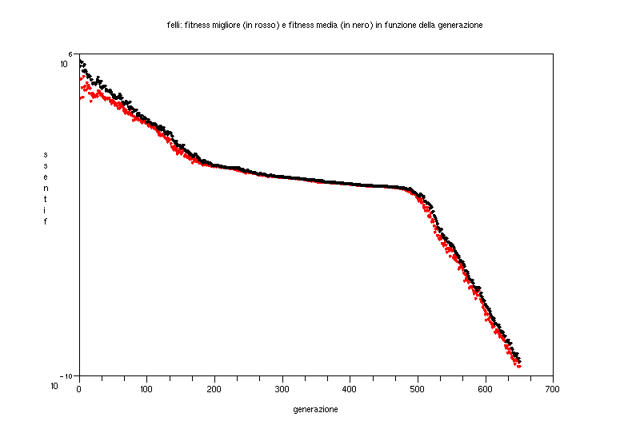
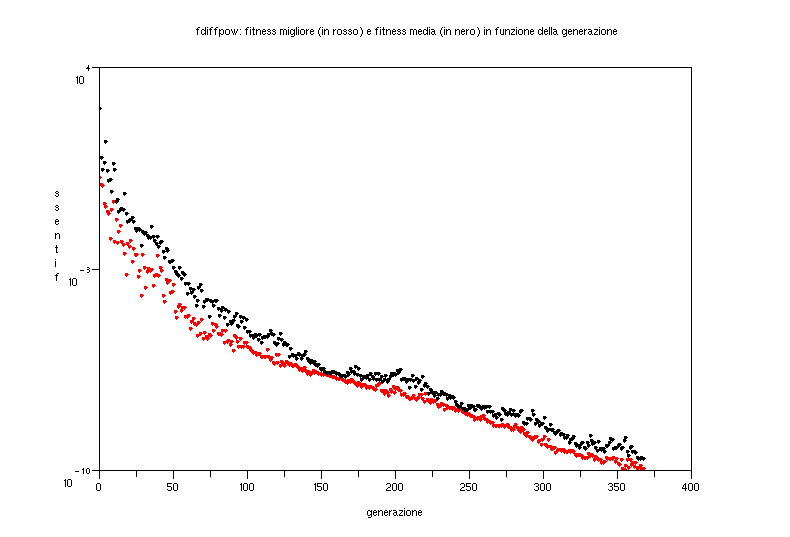
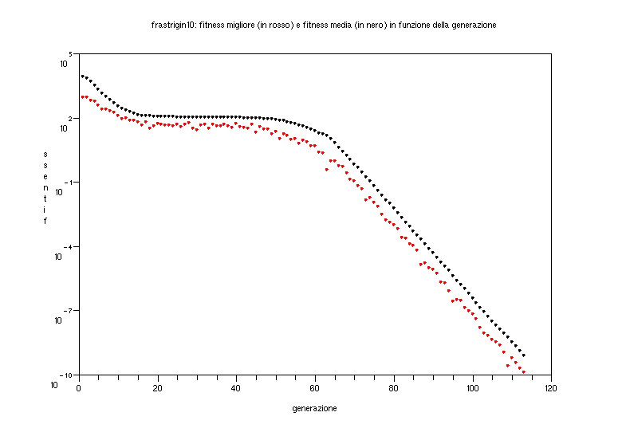
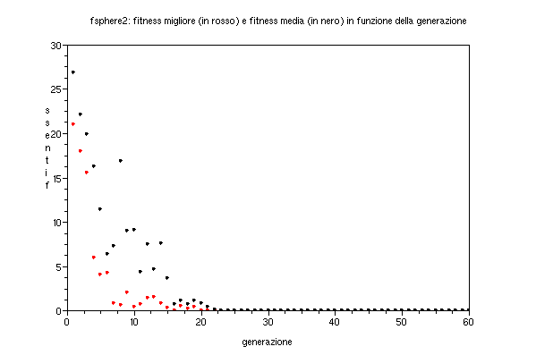
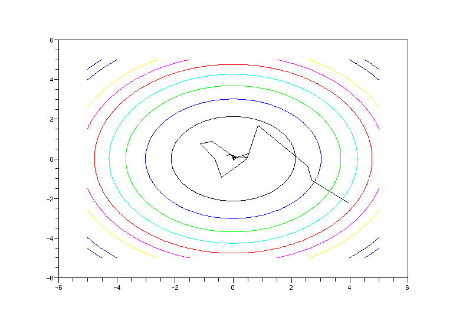
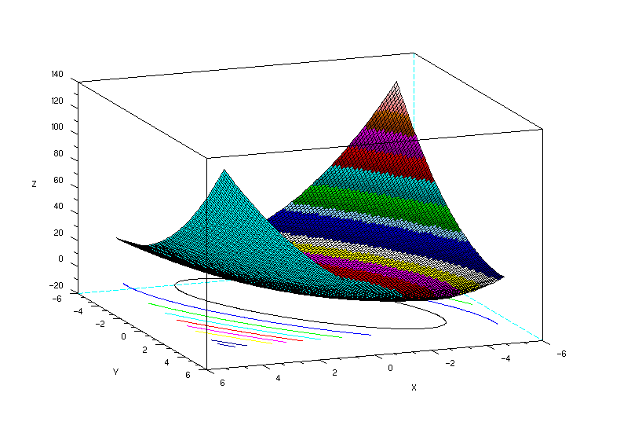
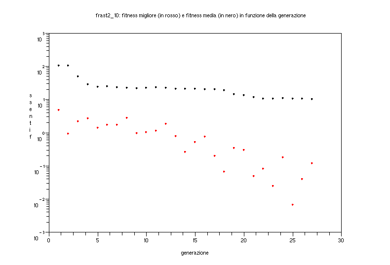
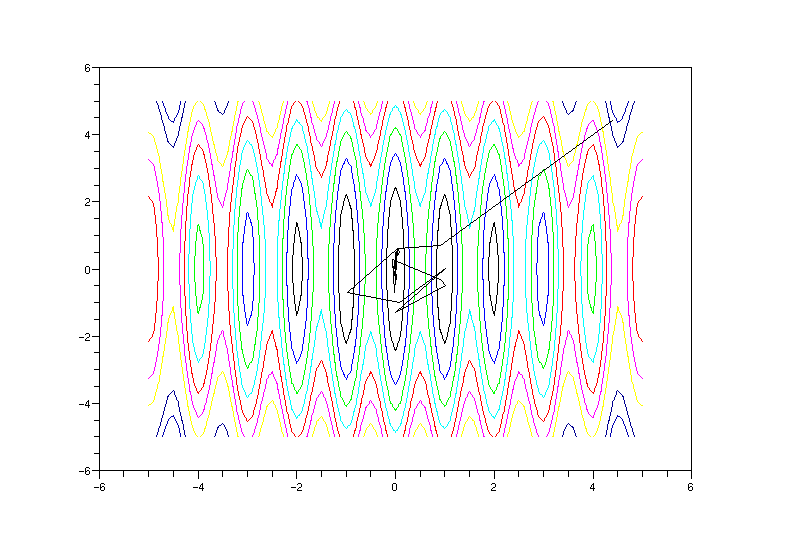
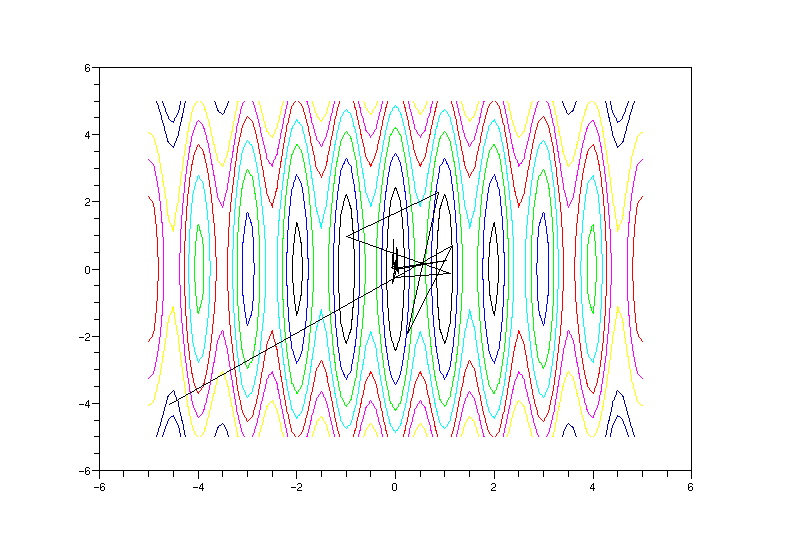

Papers di riferimento
Implementazione di riferimento
Implementazione in Scilab
Esempi
A 10 dimensioni
Sphere function
Output finale dell’algoritmo (numero di valutazioni della fitness function, valore finale della fitness function, valori finali delle variabili):
2440: 7.051D-11
ans =
- 0.0000006
- 0.0000040
- 0.0000069
- 0.0000018
- 0.0000017
- 0.0000015
- 0.0000017
- 0.0000012
0.0000021
- 0.0000010

Schwefel function
Output finale dell’algoritmo:
2490: 9.202D-11
ans =
- 0.0000045
0.0000014
0.0000007
0.0000043
- 0.0000017
0.0000047
- 0.0000076
- 0.0000015
0.0000027
- 0.0000001

Cigar function
Output finale dell’algoritmo:
5210: 4.928D-11
ans =
0.0000015
- 1.468D-09
1.648D-09
- 2.287D-09
3.982D-09
1.626D-10
1.649D-09
1.233D-09
3.723D-09
- 1.741D-09

Cigtab function
Output finale dell’algoritmo:
6270: 8.300D-11
ans =
- 0.0000008
- 4.073D-08
8.682D-09
- 1.666D-08
- 6.243D-08
3.986D-09
2.741D-08
2.067D-08
- 1.400D-08
3.052D-10

Tablet function
Output finale dell’algoritmo:
5820: 9.375D-11
ans =
- 2.347D-09
0.0000029
- 0.0000034
0.0000030
0.0000013
- 0.0000051
- 0.0000012
0.0000051
0.0000013
0.0000014

Elliptical function
Output finale dell’algoritmo:
6520: 8.446D-11
ans =
- 0.0000029
0.0000003
- 0.0000001
0.0000004
- 5.649D-08
- 0.0000001
- 1.065D-08
5.602D-09
- 5.951D-09
- 2.300D-09
Elliptical-100 function
Output finale dell’algoritmo:
4040: 7.850D-11
ans =
0.0000021
- 0.0000042
- 0.0000006
0.0000003
0.0000002
7.500D-08
- 0.0000001
- 7.367D-08
- 2.231D-08
- 4.303D-10

Diffpow function
Output finale dell’algoritmo:
3690: 9.627D-11
ans =
0.0000016
- 0.0000617
- 0.0005887
0.0050515
- 0.0061822
0.0050598
- 0.0393191
0.0797684
- 0.0587155
- 0.1431451
Rastrigin-10 function
Output finale dell’algoritmo:
68400: 6.960D-11
ans =
- 4.393D-08
- 0.0000002
- 0.0000002
1.744D-08
- 2.530D-08
6.449D-08
3.056D-08
- 4.704D-08
1.018D-08
2.119D-08Convergenza della funzione multimodale rastrigin10 raggiunta con i parametri:
lambda = 600;
xmean = rand(N,1)*10-5;
sigma = 5;
A 2 dimensioni
Sphere function
Grafico della funzione:

Output finale dell’algoritmo:
372: 5.739D-11
ans =
- 0.0000048
- 0.0000059Fitness migliore (in rosso) e fitness media (in nero) in funzione della generazione:

Fitness migliore (in rosso) e fitness media (in nero) in funzione della generazione (scala logaritmica su asse delle ordinate):

Path di ricerca della soluzione ottima:

Schwefel function
Grafico della funzione:

Output finale dell’algoritmo:
372: 2.262D-11
ans =
- 0.0000047
0.000005Fitness migliore (in rosso) e fitness media (in nero) in funzione della generazione (scala logaritmica su asse delle ordinate):

Path di ricerca della soluzione ottima:

Cigar function
Grafico della funzione:

Output finale dell’algoritmo:
888: 3.374D-11
ans =
- 1.556D-08
5.809D-09Fitness migliore (in rosso) e fitness media (in nero) in funzione della generazione (scala logaritmica su asse delle ordinate):

Path di ricerca della soluzione ottima:

Rastrigin function
Grafico della funzione:

Output finale dell’algoritmo:
4050: 0.0000105
ans =
- 0.0002062
- 0.0001033Fitness migliore (in rosso) e fitness media (in nero) in funzione della generazione (scala logaritmica su asse delle ordinate):

Path di ricerca della soluzione ottima:

Rastrigin-10 function
Grafico della funzione:

Output finale dell’algoritmo:
4050: 0.1179572
ans =
0.0189865
0.0986343Fitness migliore (in rosso) e fitness media (in nero) in funzione della generazione (scala logaritmica su asse delle ordinate):

Path di ricerca della soluzione ottima:

Rastrigin-1000 function
Grafico della funzione:

Output finale dell’algoritmo:
4050: 0.0073301
ans =
0.0000421
- 0.0199942Fitness migliore (in rosso) e fitness media (in nero) in funzione della generazione (scala logaritmica su asse delle ordinate):

Path di ricerca della soluzione ottima:
